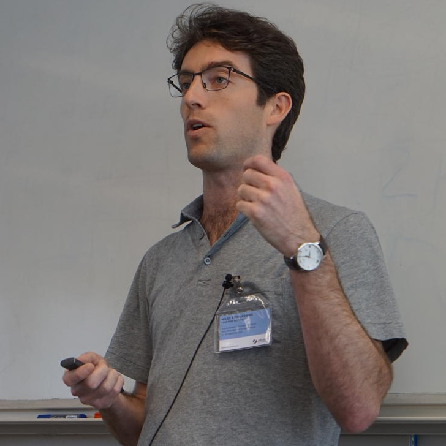

Supervised Learning with Quantum-Inspired Tensor Networks
Advances in Neural Information Processing Systems 29 (2016)

I develop and apply tensor network computational methods, particularly for quantum many-body systems. Tensor networks represent high-order tensors through contracted networks of lower-order tensors, enabling exponential parameter reduction while preserving accuracy. Applications span quantum wavefunctions, classical statistical mechanics, and machine learning.
Matrix product states, density matrix renormalization group, and extensions to two-dimensional, dynamical, and finite-temperature systems.
Quantum many-body systems, especially strongly correlated electron systems.
Tensor network algorithms for learning, connections between quantum physics and machine learning models.
Design and development of the ITensor library for tensor network computations in Julia and C++.
Supervised Learning with Quantum-Inspired Tensor Networks
Advances in Neural Information Processing Systems 29 (2016)
Assembling Fibonacci Anyons From a Z3 Parafermion Lattice Model
Phys. Rev. B 91, 235112 (2015) — Editor's Suggestion
Real-Space Parallel Density Matrix Renormalization Group
Phys. Rev. B 87, 115137 (2013)
Minimally Entangled Typical Thermal State Algorithms
New J. Phys. 12, 055026 (2010)
Email: mstoudenmire@flatironinstitute.org
Address:
Flatiron Institute
Center for Computational Quantum Physics
162 Fifth Avenue
New York, NY 10010